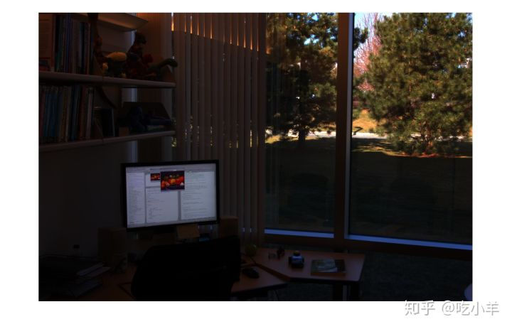
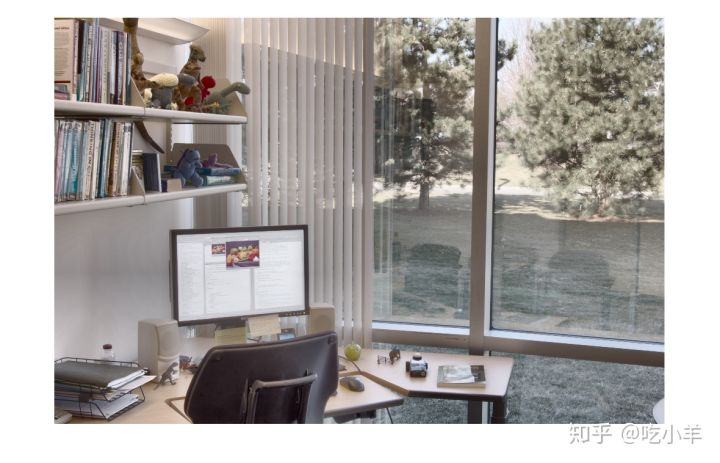

Home
本示例说明如何显示高动态范围（HDR）图像。要查看HDR图像，必须首先将数据转换为可以在计算机上正确显示的动态范围。
使用hdrread读取高动态范围（HDR）图像。如果你尝试显示HDR图像，请注意它其实无法正确显示。
hdr_image = hdrread('office.hdr');
imshow(hdr_image)

使用tonemap函数，将HDR图像转换为可以在计算机上查看相应动态范围的图像。此函数将HDR图像转换为uint8类型的RGB图像。
rgb = tonemap(hdr_image); whos Name Size Bytes Class Attributes hdr_image 665x1000x3 7980000 single rgb 665x1000x3 1995000 uint8
显示RGB图像。
imshow(rgb)

======================================================================
我的测试结果及程序
下面是我测试的代码：

注：本文根据MATLAB官网内容修改而成。